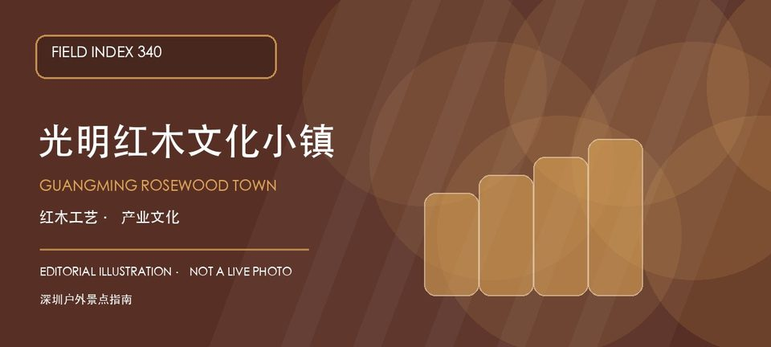

适合谁
适合家居设计、传统工艺、亲子科普和城市产业观察；具体展馆或商户有预约要求时，应提前联系确认。

SHENZHEN GUIDE · 340
光明区公明街道上村社区民生大道2号 · 产业文化街区
光明红木文化小镇以红木家具、工艺展示和产业文化体验为主要线索，把传统工艺、商业街区和城市近郊游放在光明公明片区里。它更适合带着一个明确主题慢慢看，例如了解材料、工艺或空间陈列，不宜把商户展示、公共空间和临时活动都当作固定景点。出发前应确认店铺、展馆和活动的开放安排。
WHY GO
适合家居设计、传统工艺、亲子科普和城市产业观察；具体展馆或商户有预约要求时，应提前联系确认。
先确定工艺、材料或街区空间中的一个观察主题，按公开入口进入并确认可参观范围；不在未授权区域拍摄或触摸展品，购物前核对商户资质和售后规则。
公共交通先到光明区公明街道上村社区民生大道片区，再按光明红木文化小镇官方公开入口导航；出发前核对展馆、商户和活动开放安排。
自驾按小镇官方入口或周边正规停车场导航；车位、收费和社会车辆准入以现场公告为准，不在民生大道、商户装卸区和消防通道临停。
全年可安排，春秋适合把室内展陈与街区慢走结合；高温、暴雨或商户活动调整时减少户外停留，节庆活动以官方公告为准。
NEARBY IDEAS
 编辑配图·非现场实景
编辑配图·非现场实景
左岸科技公园位于光明科学城，科研机构周边的开放绿地、建筑界面和水岸空间呈现科学城日常，适合观察新型产业园区如何提供公共空间。
 编辑配图·非现场实景
编辑配图·非现场实景
楼村湿地公园位于新湖楼村，社区湿地、水生植物和慢行步道提供小尺度自然观察，重点在河网修复与居民日常而非稀有物种打卡。
 授权实景图
授权实景图
红花山公园位于公明街道振明路88号，公明老城区的山体公园以红花山塔、林荫台阶和老墟视野构成短线登高路线。从红花山塔转向公明老城远眺时，地点的空间、历史或使用方式才会变得清楚。